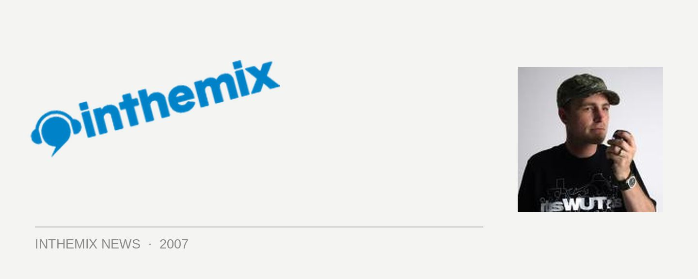

Katalyst gets intimate
His superb new album What’s Happening is due to hit the stores tomorrow and to mark its release, Katalyst will be hitting the east coast for a series of intimate ‘listening party’ shows to showcase the new material. The new album sees him refining even further his trademark fusion of funk, soul, rock, hip hop and everything else and the first single All You’ve Got is already on high rotation.
It’s the first time Katalyst will be playing material from the new album, featuring Stu Hunter on keys/bass/synths, Katalyst on the MPC and effects and Leeroy Brown on the decks, along with rotating bunch of special guest MCs that will include RuC.L, Hau from Koolism, Adalita from Magic Dirt, Mat McHugh from The Beautiful Girls, Steve Spacek, Xela from Good Buddha and N’fa.
It’ll be a great chance to catch the Katalyst experience in an intimate setting before he ramps it up for a national tour in November.
Catch Katalyst at the following intimate shows…
Saturday September 15th: The Rumpus Room, Brisbane
Thursday September 20th: Melt, Sydney
Friday October 5th: The Toff In Town, Melbourne